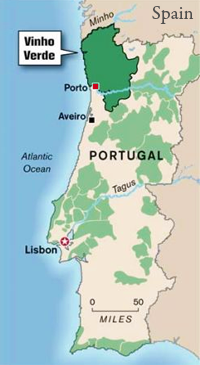
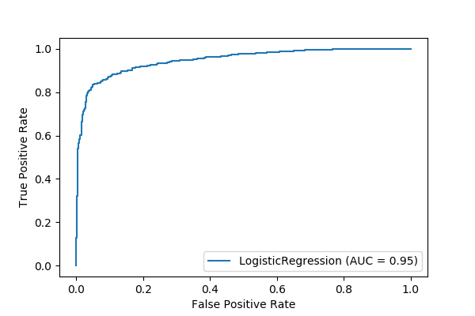

Using data from UCI's wine dataset analyzing the chemical breakdown of wines from Portugal's Vinho Verde region, we set out to design a model that could predict wine type (white or red) based on chemical analyses.
A look at the data shows that there are more white wines than red wines in our dataset. The Vinho Verde region is primarily known for light, fruity and slightly effervescent white wines so this is to be expected, however, we were somewhat concerned about an unblanced dataset.
Luckily for us the dataset was primarily clean and filled with continous (numerical) data. The chemical makeup of white wines and red wines are essentially identical which makes this data ideal for binary classification using a logistic regression model.
| Feature Name |
|---|
| fixed acidity |
| volatile acidity |
| citric acid |
| residual sugar |
| chlorides |
| free sulfur dioxide |
| total sulfur dioxide |
| density |
| pH |
| sulphates |
| alcohol |
Our model returned an accuracy of 88%.
| precision | recall | f1-score | support | |
|---|---|---|---|---|
| 0.0 | 0.79 | 0.73 | 0.76 | 499.00 |
| 1.0 | 0.91 | 0.94 | 0.92 | 1450.00 |
| accuracy | 0.88 | 0.88 | 0.88 | 0.88 |
| macro avg | 0.85 | 0.83 | 0.84 | 1949.00 |
| weighted avg | 0.88 | 0.88 | 0.88 | 1949.00 |
Here you can see the model was good at classifying wines that were not white.
| n=1949 | Predicted YES | Predicted NO | |
|---|---|---|---|
| Actual YES | |||
| Actual NO | |||
Mean Absolute Error = 0.117
Mean Squared Error = 0.117
Root Mean Squared Error = 0.342
An 88% percent accuracy score is pretty good but we wanted to see whether we could improve that with some advanced techniques. Using Grid Search Cross Validation, we were able to increase our score from 88% to a whopping 93%!
Area Under the Curve or AUC represents the probability that a model ranks a positive example more highly than a radnom negative one. AUC ranges from 0 to 1. Models that are 100% right would have an AUC of 1.0 and those that are 100% wrong would have an AUC of 0.0. As you can see, our model returned am AUC of .95, suggesting that this model is highly accurate.
